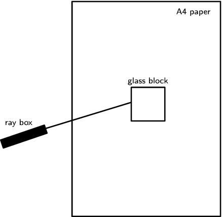
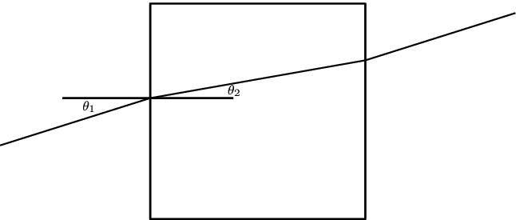

To verify Snell's law
glass block, ray box, protractor, 5 pieces of A4 paper, pencil, ruler

This experiment will require you to follow the steps below 5 times (once for each piece of A4 paper).
-
Place the glass block in the middle of the A4 piece of paper so that its sides are parallel to each of the sides of the paper and draw around the block with a pencil to make its outline on the piece of paper.
-
Turn on the ray box and aim the light ray towards the glass block so that it makes an angle with the nearest surface of the block as shown in the picture. For each piece of paper, change the angle of the incoming ray.
<code> (0,-3.6)(7.384171,3.6) \psframe[linewidth=0.04,dimen=outer](7.384171,3.6)(2.3841712,-3.6) \psframe[linewidth=0.04,dimen=outer](5.5241714,0.74)(4.364171,-0.42) \rput{18.733288}(-0.25339806,-0.30379668){\psframe[linewidth=0.04,dimen=outer,fillstyle=solid,fillcolor=black](1.5841712,-0.76)(0.004171218,-1.08)} \psline[linewidth=0.04cm](0.96417123,-0.82)(4.384171,0.22) \rput(6.457218,3.22){\footnotesize A4 paper} \rput(4.940343,0.92){\footnotesize glass block} \rput(0.62120247,-0.46){\footnotesize ray box} </code> -
You will now need to mark on the paper, the path of the incoming and outgoing light rays. Do this by first drawing a dot on the paper somewhere along the incoming light ray. Now draw a second dot on the paper at the point where the incoming light ray hits the surface of the block. Do the same thing for the outgoing light ray; mark the point where it leaves the block and some other point along its path.
-
Now switch off the ray box and remove the glass block from the paper. Use a ruler to join the dots of the incoming ray. Now join the dots of the outgoing ray. Lastly, draw a line which joins the point where the incoming ray hits the block and where the outgoing ray leaves the block. This is the path of the light ray through the glass.
-
The aim of this experiment is to verify Snell's law. i.e. . We know the refractive index of our two media:
For air,
For glass,
Now we need to measure the two angles, and . To do this, we need to draw the normal to the surface where the light ray enters the block. Use the protractor to measure an angle of to the entry surface and draw the normal. At this point, the drawing on your piece of paper should look something like the picture:
<code> (0,-2.3)(10.936,2.3) \psframe[linewidth=0.04,dimen=outer](7.76,2.3)(3.16,-2.3) \psline[linewidth=0.032cm](0.0,-0.72)(3.18,0.28) \psline[linewidth=0.032cm](7.74,1.08)(10.92,2.08) \psline[linewidth=0.04cm](1.32,0.28)(4.94,0.28) \psline[linewidth=0.032cm](3.18,0.28)(7.74,1.08) \rput(1.8835156,0.1){\footnotesize $\theta_1$} \rput(4.9635158,0.44){\footnotesize $\theta_2$} </code> -
Now measure and using the protractor. Enter the values you measured into a table which looks like:
Have a look at your completed table. You should have 5 rows filled in, one for each of your pieces of A4 paper. For each row, what do you notice about the values in the last two columns? Do your values agree with what Snell's law predicts?